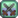

Thorns Ring
Jump to navigation
Jump to search
| Thorns Ring | |
| When enemies damage you, they will take damage themselves. | |
| Information | |
| Source: | Crafting with  Combat Level 7
|
| Ingredients: | |
| Adventurer's Guild
| |
| Purchase Price: | Not Sold |
| Sell Price: | |
The Thorns Ring is a ring that can be crafted after earning the recipe at  Combat Level 7. The ingredients are 50 Bone Fragments, 50 Stone, and 1 Gold Bar.
Combat Level 7. The ingredients are 50 Bone Fragments, 50 Stone, and 1 Gold Bar.
While wearing the Thorns Ring, being hit results in the offending monster taking damage equal to the unmitigated damage of their attack minus the defense of the monster. The damage is doubled if the player has two Thorns Rings equipped.[1] If the player kills a monster using the Thorns Ring, the monster will still drop loot like normal.
Dyeing
Thorns Ring can be used in dyeing, serving as a yellow dye at the dye pots, located in Emily's and Haley's house, 2 Willow Lane.
Notes
- If the damage done to the farmer is less than 10, the damage done to the monster is instead the average between the damage done to the farmer and the unmitigated damage.
- Kills made by the thorns ring do not count towards Monster Eradication Goals at the Adventurer's Guild.
References
- ↑ See Farmer::takeDamage in the game code.
History
- 1.5: Introduced.
- 1.6.9: Thorns Ring effect now stacks when using more than one, and provides normal drops.